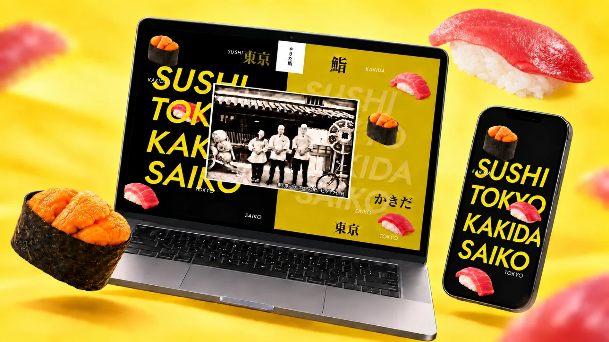

食・農
かきだ鮨

PROJECT INFORMATION
公式サイトを見る ↗（新しいタブで開く）東京・京都で展開する「かきだ鮨」の海外向けWebサイト。株式会社おくりバントと共同で制作し、SCHEMAはWebディレクションとビジュアルディレクションを担当しました。
01 / 背景とテーマ
輪郭を与える
かきださんからいただいた号令は「いつもより真面目に作ろう」。普段のヤバさを知っていると、この「いつもより」がなかなか難しい。海外のお客様に、鮨のおいしさや品質が伝わる高級感は欲しい。でも、かきだ鮨らしい楽しさや、いつもの空気をすべてなくしてしまうのも違う。そのちょうどいいところを探るところから始まりました。
02 / SCHEMAの担当範囲
全体を整える
SCHEMAはWebディレクションとビジュアルディレクションを担当し、株式会社おくりバントのみなさんと探りながら形にしていきました。各店舗の情報や予約、仕入れや職人の育成へのこだわりは、きちんと伝わるように整理しています。
03 / 取り組みの視点
枠組みをひらく
黒とゴールドをベースに、上質さを感じられる画面に。一方で、「SUSHI」「TOKYO」「KAKIDA」「SAIKO」の大きな文字と、自由に漂うお寿司たちを大胆に配置し、文字も写真も動きも、かしこまりすぎず自由にしています。少し高級感があって、ちゃんとおいしそうで、なんだか楽しそう。いつもより真面目な、かきだ鮨のサイトです。
CREDITS
クレジット
- Webディレクション／ビジュアルディレクション
- SCHEMA
- 共同制作
- 株式会社おくりバント